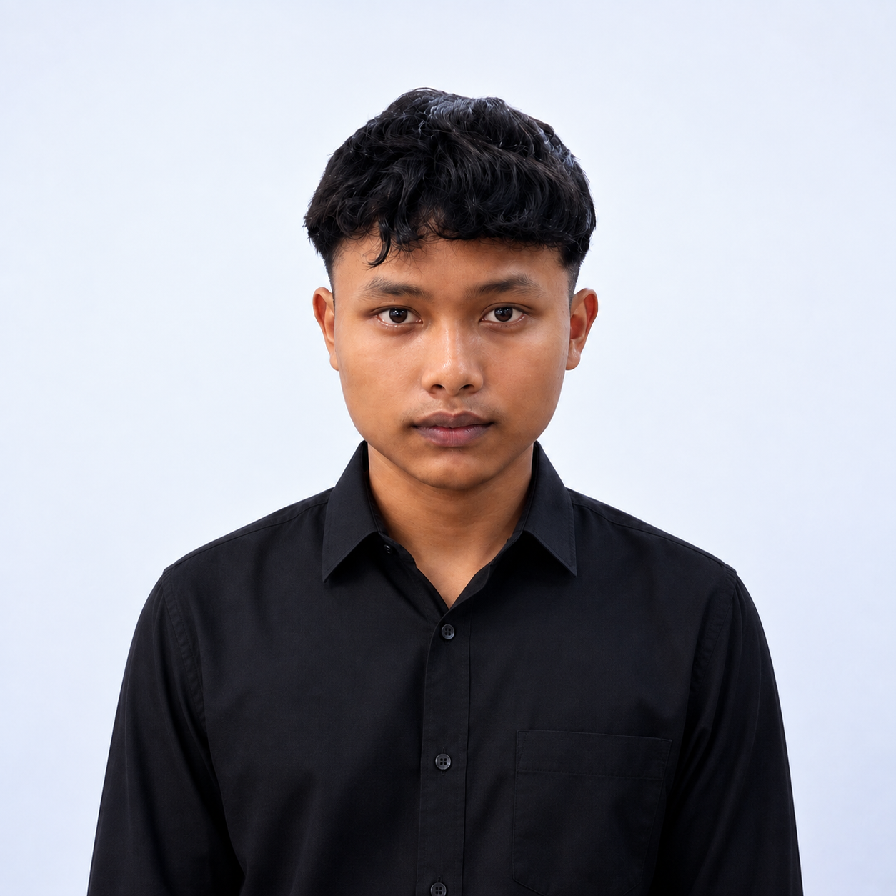

Website Portofolio
Selamat Datang di Website Portofolio, Wildan Arifaul Iskhaq.
Halo, saya adalah seorang Pelajar PPLG yang berfokus pada pengembangan aplikasi [Web / Mobile / Gim] dan solusi digital. Selamat datang di portofolio karya dan ruang eksplorasi coding saya.

Keahlian
Keahlian yang saya miliki.
Setiap Keahlian didapat melalui proses pembelajaran.
01
Pengembangan Web Dasar
Menguasai pembuatan struktur dan tata letak halaman web menggunakan HTML5, CSS3, dan dasar JavaScript.
02
Pengelolaan Database (MySQL)
Menguasai pembuatan, manipulasi, dan relasi tabel database (CRUD) untuk mendukung kebutuhan penyimpanan data pada sistem aplikasi web.
03
Kerja Sama Tim
Mampu bekerja sama secara efektif dalam tim developer.
Alur Belajar
Empat tahap yang selalu saya terapkan.
Riset & Perencanaan
Mengumpulkan materi tugas sekolah atau memetakan kebutuhan.
Diskusi & Kolaborasi
Bertukar ide dengan teman sekelas untuk mendapat perspektif terbaik.
Eksekusi Terukur
Pengerjaan tugas sesuai dengan Deadline yang ditentukan.
Evaluasi & Refleksi
Meminta masukan dari guru atau teman untuk perbaikan di masa mendatang.
FAQ
Pertanyaan yang sering ditanyakan seputar saya.
Kenapa memilih jurusan PPLG?
Saya tertarik dengan cara kerja teknologi di balik aplikasi dan website yang saya pakai sehari-hari. Rasa penasaran itu yang membawa saya masuk PPLG, dan ternyata proses membangun sesuatu dari nol lewat kode itu sangat memuaskan.
Bahasa pemrograman apa yang paling dikuasai?
Saat ini saya paling nyaman dengan HTML, CSS, dan JavaScript untuk membangun tampilan web, serta PHP dan MySQL untuk mengelola data di sisi server.
Apa tantangan terbesar saat belajar coding?
Menghadapi error yang tidak jelas penyebabnya. Tapi dari situ saya belajar untuk membaca pesan error dengan teliti dan terbiasa mencari solusi selangkah demi selangkah, bukan langsung menyerah.
Apa rencana setelah lulus SMK?
Saya ingin terus memperdalam Web Development, baik lewat kuliah maupun pengalaman kerja langsung di industri, sambil tetap membuka diri untuk belajar hal baru seperti mobile development.
Terbuka untuk kolaborasi atau proyek bareng?
Tentu! Saya senang diajak diskusi seputar proyek sekolah, ide aplikasi sederhana, atau sekadar bertukar pengalaman belajar coding. Silakan hubungi saya lewat halaman Kontak.
Quotes
"Dimana pun engkau berada selalulah menjadi yang terbaik dan berikan yang sanggup engkau berikan."
— B. J. Habibie